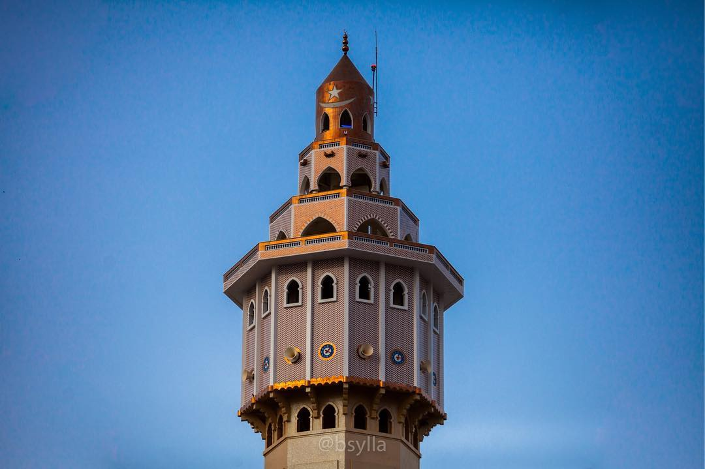
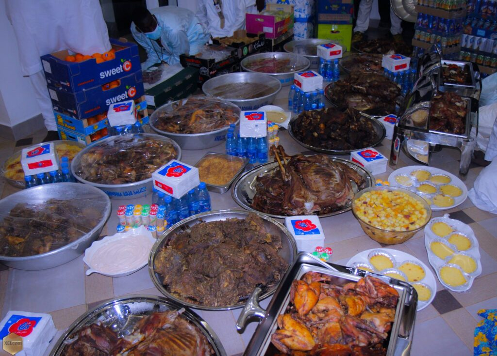

.jpg)


La tradition de la célébration du Kazu Rajab, remonte aux années 60, précisément à l’an 1963. Cette année-là, son anniversaire venu, Serigne Fallou quitta Touba quelques temps avant le coucher du soleil pour se rendre à Darou Salam son lieu de naissance, afin d’y passer la nuit en prières. Le lendemain, au sortir de sa retraite, il se rendit au domicile de Serigne Affia NIANG. L’accueil fut chaleureux et empreint de piété. On peut considérer, pour l’histoire, que le premier repas qui a alors été servi, à l’occasion d’une célébration du Kazu Rajab, a été préparé par Sokhna Asta Wâlo NIANG, la mère de Serigne Abdourahmane BOUSSO. Pour donner à l’événement un caractère festif, à la dimension de l’immense honneur que Serigne Fallou venait de faire à Serigne Affia NIANG, on servit du thé, des biscuits et autres friandises. Il faut préciser cependant que, pour cette première édition, tout se passa dans la plus stricte intimité familiale. Seuls participaient à la fête Serigne Affia NIANG, Serigne Abdou Rahmane BOUSSO, Serigne Abdou Chakor. Serigne Affia Niang eut ce jour là, le grand bonheur de recevoir, en guise de " barkélou " (objet servant à attirer la bénédiction) les habits que Serigne Fallou avait portés pendant sa nuit de prières à Darou Salam. Voici, en quelques mots, le déroulement de la toute première édition de la célébration, faite par Serigne Fallou lui-même.
Il y a des coïncidences si lourdes de significations et si riches en bienfaits de toutes sortes pour l’humanité, qu’il faut y voir un signe de la miséricorde divine. Il en est ainsi de la coïncidence qui existe entre la date anniversaire de " Al Isrâ " (Le voyage nocturne) et du " Mi ’raj " (L’Ascension) et celle de la naissance de Serigne Mouhamadou Falilou MBACKE (deuxième Khalife de Serigne Touba de 1945 à 1968)